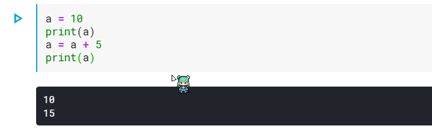
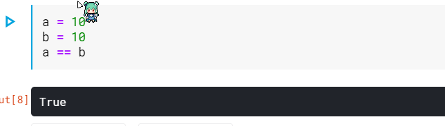
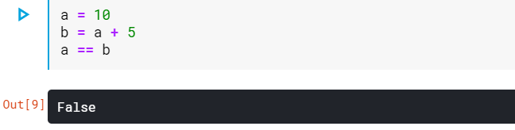

變數及基本運算 <<
Previous Next >> Dictionary 字典
assing 指定
在程式語言裡 = 就等於指定的意思
例如 a = b 就是把 b （這個物件）指定給 a （這個變數）
像是 a = 10 就是指定 a 這個變數的值為 10， a = a + 5則是把 a + 5這個值再重新指定給 a ， 所以此時的 a 就從 10 變成 15了。

另外還能同時運算並指派的功能例如: +=,-=,*=等等 像是輸入a +=5就等於 a = a + 5一樣
其他還包括*= 、 /= 、 %= 、 **=這些都是在運算後再重新派給自己
如果要判斷 a 是否等於 b ，則是要使用 == 來判斷。
a == b 所代表的即是判定 a 的值是否等於 b ，如果 a 的確跟 b 相同的話，會回傳 True；反之，則回傳 False。


變數及基本運算 <<
Previous Next >> Dictionary 字典